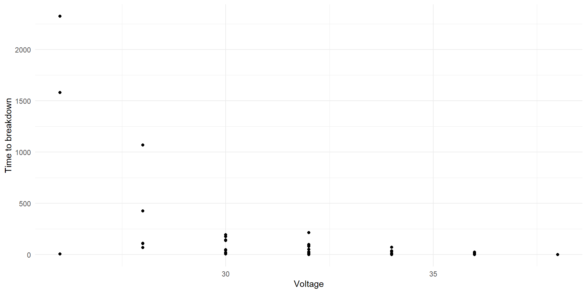
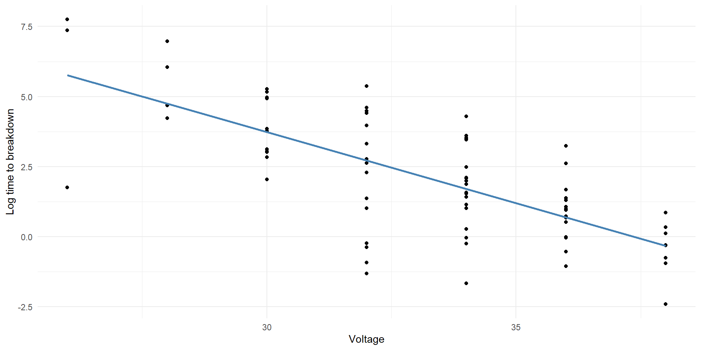
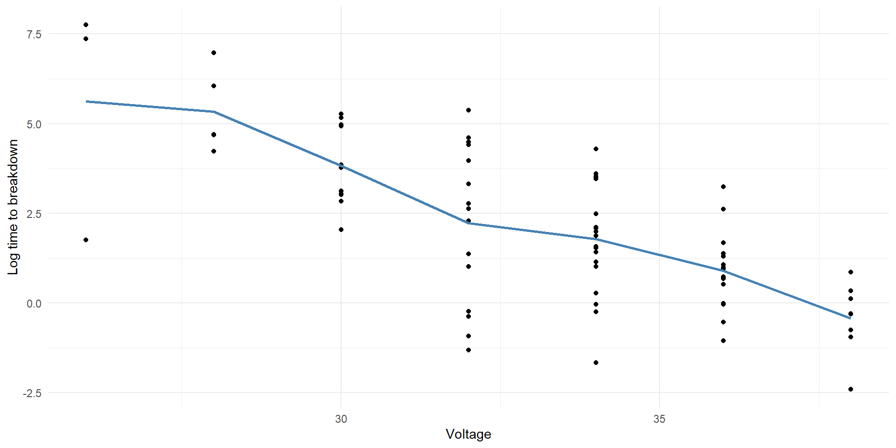
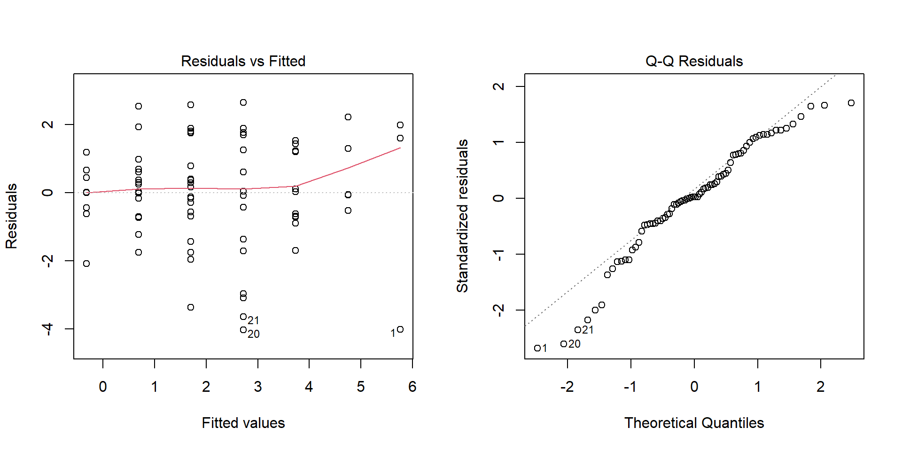

Comparing regression models
Comparing regression models
Why compare models
Suppose we are interested in explaining a response variable \(Y\) .
Model A
\[
\text{Model A:}\qquad E(Y)=\beta_0+\beta_1X_1
\]
Model B
\[
\text{Model B:}\qquad E(Y)=\beta_0+\beta_1X_1+\beta_2X_2+\beta_3X_3
\]
Model B includes all the terms in Model A, plus two additional predictors.
Model A is the reduced model
Model B is the full model
Model A is nested within Model B
Do the two additional predictors improve the model enough to justify including them?
What happens when we add predictors?
Adding predictors cannot increase the residual sum of squares (SSE).
\[
\operatorname{SSE}(B)\leq \operatorname{SSE}(A)
\]
The full model will always fit the observed data at least as well as the reduced model.
However, a smaller SSE does not automatically mean that the larger model is better. The reduction could simply be due to fitting random variation in the sample.
We need to assess whether the reduction in SSE is large relative to the remaining residual variation.
Comparing the variation explained by two models
For a regression model containing an intercept,
\[
\operatorname{SST}=\operatorname{SSR}+\operatorname{SSE}
\]
For the two models:
\[
\begin{aligned}
\operatorname{SST}
&=\operatorname{SSR}(A)+\operatorname{SSE}(A)\\
\operatorname{SST}
&=\operatorname{SSR}(B)+\operatorname{SSE}(B)
\end{aligned}
\]
Since the total sum of squares is the same,
\[
\boxed{
\operatorname{SSE}(A)-\operatorname{SSE}(B)
=
\operatorname{SSR}(B)-\operatorname{SSR}(A)
}
\]
So, the reduction in SSE is exactly the additional variation explained by the full model.
The partial \(F\) -test
Consider two nested models:
\[
\begin{aligned}
\text{Reduced model A:}\quad
&E(Y)=\beta_0+\beta_1X_1+\cdots+\beta_qX_q,\\
\text{Full model B:}\quad
&E(Y)=\beta_0+\beta_1X_1+\cdots+\beta_kX_k,
\end{aligned}
\]
where \(q<k\) .
The full model adds \(k-q\) predictors.
We test:
\[
\begin{aligned}
H_0:\quad &\beta_{q+1}=\cdots=\beta_k=0,\\
H_A:\quad &\text{at least one added coefficient is non-zero.}
\end{aligned}
\]
In words:
\(H_0\) : the additional predictors do not improve the model.\(H_A\) : at least one additional predictor contributes to the model.
The partial \(F\) -statistic
The test statistic compares the reduction in SSE with the residual variation remaining in the full model:
\[
\boxed{
F= \frac{
\{\operatorname{SSE}(A)-\operatorname{SSE}(B)\}/(k-q)}
{\operatorname{SSE}(B)/(n-k-1)}
}
\]
Under \(H_0\) ,
\[
F\sim F_{k-q,\,n-k-1}
\]
Here:
\(n\) is the number of observations.\(k-q\) is the number of additional predictors.\(n-k-1\) is the residual degrees of freedom in the full model.
We reject \(H_0\) when the observed \(F\) -statistic is sufficiently large.
A large \(F\) -statistic indicates that the reduction in SSE is large relative to the residual variation in the full model.
When can we use this test?
The partial \(F\) -test is appropriate when:
The models are nested : every term in the reduced model also appears in the full model.
Both models are fitted to the same response and the same observations.
The usual assumptions of the normal linear model are appropriate for the test.
The test can compare models that differ by one or several terms.
For example, we can test whether two predictors should be added together, or whether one predictor should be removed from a larger model.
Let’s do an example
The steam data
Variable
Description
Steam
Pounds of steam used per month
Temp
Average atmospheric temperature
Inv
Fatty acid inventory
Prod
Pounds of crude glycerin produced
Wind
Average wind velocity
Cday
Calendar days in the month
Opday
Operating days in the month
Fday
Days below 32°F
Wind2
Average wind velocity squared
Start
Number of production start-ups
Let’s do an example
The steam data
Variable
Description
Steam
Pounds of steam used per month
Temp
Average atmospheric temperature
Inv
Fatty acid inventory
Prod
Pounds of crude glycerin produced
Wind
Average wind velocity
Cday
Calendar days in the month
Opday
Operating days in the month
Fday
Days below 32°F
Wind2
Average wind velocity squared
Start
Number of production start-ups
Let’s do an example
Comparing two models
We will compare:
\[
\begin{aligned}
\text{Model A:}\quad
&E(\text{Steam})=\beta_0+\beta_1\text{Temp}\\
\text{Model B:}\quad
&E(\text{Steam})=\beta_0+\beta_1\text{Temp}
+\beta_2\text{Inv}+\beta_3\text{Prod}.
\end{aligned}
\]
Model B adds Inv and Prod to the model containing Temp.
<- lm (steam ~ temp, data = steam)<- lm (steam ~ temp + inv + prod, data = steam)
Let’s do an example
Comparing two models
Call:
lm(formula = steam ~ temp, data = steam)
Residuals:
Min 1Q Median 3Q Max
-1.6789 -0.5291 -0.1221 0.7988 1.3457
Coefficients:
Estimate Std. Error t value Pr(>|t|)
(Intercept) 13.62299 0.58146 23.429 < 2e-16 ***
temp -0.07983 0.01052 -7.586 1.05e-07 ***
---
Signif. codes: 0 '***' 0.001 '**' 0.01 '*' 0.05 '.' 0.1 ' ' 1
Residual standard error: 0.8901 on 23 degrees of freedom
Multiple R-squared: 0.7144, Adjusted R-squared: 0.702
F-statistic: 57.54 on 1 and 23 DF, p-value: 1.055e-07
Let’s do an example
Comparing two models
Call:
lm(formula = steam ~ temp + inv + prod, data = steam)
Residuals:
Min 1Q Median 3Q Max
-1.2348 -0.4116 0.1240 0.3744 1.2979
Coefficients:
Estimate Std. Error t value Pr(>|t|)
(Intercept) 9.514814 1.062969 8.951 1.30e-08 ***
temp -0.079928 0.007884 -10.138 1.52e-09 ***
inv 0.713592 0.502297 1.421 0.17
prod 0.330497 3.267694 0.101 0.92
---
Signif. codes: 0 '***' 0.001 '**' 0.01 '*' 0.05 '.' 0.1 ' ' 1
Residual standard error: 0.652 on 21 degrees of freedom
Multiple R-squared: 0.8601, Adjusted R-squared: 0.8401
F-statistic: 43.04 on 3 and 21 DF, p-value: 3.794e-09
Let’s do an example
Comparing two models in R
We can compare the two nested models directly using anova()
This performs the partial \(F\) -test.
Null hypothesis
\[
H_0:\quad \beta_2=\beta_3=0
\]
Alternative hypothesis
\[
H_A:\quad \text{at least one of }\; \beta_2,\beta_3\ne 0.
\]
The test asks whether inv and prod, considered together, improve the model after accounting for temp.
Calculating the \(F\) -statistic by hand
For these models:
\(n=25\) observations.Model A has 2 parameters: an intercept and temp.
Model B has 4 parameters: an intercept and three predictors.
The full model therefore has \(25 - 4 = 21\) residual degrees of freedom.
Two predictors are added
The residual sums of squares are:
\[
\operatorname{SSE}(A)=18.223, \qquad \operatorname{SSE}(B)=8.927.
\]
Therefore,
\[
F_{\text{obs}} = \frac{(18.223-8.927)/2}{8.927/21} = 10.93
\]
Under the null hypothesis: \(F\sim F_{2,21}\) . As such, the p-value is less than 0.01
We reject \(H_0\) : there is evidence that adding inv and prod improves the model.
anova (model_A, model_B)## Analysis of Variance Table ## ## Model 1: steam ~ temp ## Model 2: steam ~ temp + inv + prod ## Res.Df RSS Df Sum of Sq F Pr(>F) ## 1 23 18.223 ## 2 21 8.927 2 9.2964 10.934 0.0005569 *** ## --- ## Signif. codes: 0 '***' 0.001 '**' 0.01 '*' 0.05 '.' 0.1 ' ' 1
The partial \(F\) -test does not ask whether the full model has a smaller SSE. It must have a smaller or equal SSE.
Instead, it asks:
Is the reduction in SSE large enough to justify the additional parameters?
Sequential sum of squares
Sequential sums of squares
Adding predictors one at a time
We can also build a regression model by adding predictors sequentially.
For the steam data, consider:
\[
\begin{aligned}
\text{Model A:}\quad
&E(Y)=\beta_0,\\
\text{Model B:}\quad
&E(Y)=\beta_0+\beta_1X_1,\\
\text{Model C:}\quad
&E(Y)=\beta_0+\beta_1X_1+\beta_2X_2,\\
\text{Model D:}\quad
&E(Y)=\beta_0+\beta_1X_1+\beta_2X_2+\beta_3X_3.
\end{aligned}
\]
where:
\(X_1=\text{temp}\) \(X_2=\text{inv}\) \(X_3=\text{prod}\)
What does each predictor add?
The additional variation explained when moving from Model A to Model B is:
\[
\operatorname{SSR}(B\mid A) = \operatorname{SSR}(B)-\operatorname{SSR}(A)
\]
Similarly,
\[
\begin{aligned}
\operatorname{SSR}(C\mid B) &=\operatorname{SSR}(C)-\operatorname{SSR}(B)\\
\operatorname{SSR}(D\mid C) &=\operatorname{SSR}(D)-\operatorname{SSR}(C)
\end{aligned}
\]
These are called sequential sums of squares
Each value measures the additional variation explained by a predictor when it is added to the predictors already in the model.
Sequential sums of squares for the steam data
Predictor added
Additional df
Sequential SS
temp
1
45.592
inv
1
9.292
prod
1
0.004
The total regression sum of squares for the full model is approximately:
\[
\operatorname{SSR}(D) = 45.592+9.292+0.004 = 54.888
\]
prod explains very little additional variation after temp and inv have already been included
Obtaining sequential sums of squares in R
The anova() function applied to a single lm model reports sequential sums of squares
<- lm (steam ~ temp + inv + prod, data = steam)anova (model_B)
Analysis of Variance Table
Response: steam
Df Sum Sq Mean Sq F value Pr(>F)
temp 1 45.592 45.592 107.2523 1.046e-09 ***
inv 1 9.292 9.292 21.8588 0.0001294 ***
prod 1 0.004 0.004 0.0102 0.9203982
Residuals 21 8.927 0.425
---
Signif. codes: 0 '***' 0.001 '**' 0.01 '*' 0.05 '.' 0.1 ' ' 1
Obtaining sequential sums of squares in R
The order matters
Suppose temp and inv are related to one another.
If temp enters the model first, it receives credit for the variation it explains, including variation that it shares with inv.
When inv enters second, it is only credited with the additional variation it explains after temp has been included.
If we reverse the order, the allocation of shared variation changes.
Sequential sums of squares depend on the order in which predictors enter the model
Testing sequential sums of squares
Each sequential sum of squares can be tested using a partial \(F\) -test.
For example, to test whether prod contributes after temp and inv, compare:
\[
\begin{aligned}
\text{Reduced model C:}\quad
&E(Y)=\beta_0+\beta_1\text{temp}+\beta_2\text{inv},\\
\text{Full model D:}\quad
&E(Y)=\beta_0+\beta_1\text{temp}
+\beta_2\text{inv}+\beta_3\text{prod}
\end{aligned}
\]
Sequential and adjusted sums of squares
There are different ways to allocate explained variation among predictors.
Type I sums of squares: sequential (depend on the order of predictors).Type II sums of squares: assess each predictor after accounting for the other main effects.
For example, the car package provides Type II sums of squares:
:: Anova (model_B, type = 2 )## Anova Table (Type II tests) ## ## Response: steam ## Sum Sq Df F value Pr(>F) ## temp 43.690 1 102.7760 1.524e-09 *** ## inv 0.858 1 2.0183 0.1701 ## prod 0.004 1 0.0102 0.9204 ## Residuals 8.927 21 ## --- ## Signif. codes: 0 '***' 0.001 '**' 0.01 '*' 0.05 '.' 0.1 ' ' 1
Why check for lack of fit?
A regression model can have statistically significant coefficients and still be an inadequate description of the relationship.
For example, a straight line may not describe a curved relationship very well.
We therefore need to distinguish between:
A predictor having a relationship with the response. The chosen regression model adequately describing that relationship.
A formal lack-of-fit test can help assess whether a specified regression model is appropriate.
When can we test for lack of fit?
A formal lack-of-fit test requires replicated observations .
This means that we have multiple response observations at one or more identical combinations of predictor values.
For simple linear regression, we need repeated observations at the same values of \(X\) .
These replicates allow us to estimate the random variation in the response without relying on the fitted regression line.
Some notation
Suppose we have:
\(g\) distinct values of the predictor, \(X\) .\(n_i\) observations at the \(i^{\text{th}}\) value of \(X\) .\(n=\sum_{i=1}^{g}n_i\) observations in total.
Let \(y_{ij}\) denote the \(j\) th response observed at the \(i\) th predictor value.
The average response at the \(i\) th predictor value is:
\[
\bar y_{i} = \frac{1}{n_i}\sum_{j=1}^{n_i}y_{ij}
\]
Two ways to describe the data
We can fit two different models
Simple linear regression
\[
Y_{ij}=\beta_0+\beta_1x_i+\varepsilon_{ij}
\]
Means model
\[
Y_{ij}=\mu_i+\varepsilon_{ij}
\]
Model 1: assumes that the expected response follows a straight line
Model 2: gives each distinct value of \(X\) its own expected response
it does not require the group means to lie on a straight line
Pure error
The means model allows us to measure the variation among observations that share the same value of \(X\) .
The pure error sum of squares is:
\[
\boxed{
\operatorname{SS}_{PE} = \sum_{i=1}^{g}\sum_{j=1}^{n_i} (y_{ij}-\bar y_{i})^2
}
\]
This measures the variation of individual observations around their group means.
Its degrees of freedom are:
\[
df_{PE} = \sum_{i=1}^{g}(n_i-1) = n-g
\]
The pure error mean square is:
\[
\operatorname{MS}_{PE} = \frac{\operatorname{SS}_{PE}}{n-g}
\]
It provides an estimate of the error variance, \(\sigma^2\)
Why is pure error useful?
The pure error estimate is obtained from variation among observations with identical predictor values .
It does not depend on whether the regression relationship is linear.
This gives us a way to estimate the random variation in the data independently of the fitted regression line.
In contrast, the residual sum of squares from simple linear regression includes both:
random variation among replicated observations
any systematic lack of fit caused by the straight-line model
Separating residual variation
The regression residual sum of squares can be decomposed into:
\[
\boxed{
\operatorname{SSE} = \operatorname{SS}_{LOF} + \operatorname{SS}_{PE}
}
\]
where:
\(\operatorname{SS}_{PE}\) is pure error\(\operatorname{SS}_{LOF}\) is the lack-of-fit sum of squares
Therefore,
\[
\boxed{
\operatorname{SS}_{LOF} = \operatorname{SSE}-\operatorname{SS}_{PE}
}
\]
The lack-of-fit sum of squares measures the additional variation arising because the fitted straight line does not pass through all the group means.
Degrees of freedom
Simple linear regression
\[
df_{SSE}=n-2
\]
Means model
\[
df_{PE}=n-g
\]
The remaining degrees of freedom are:
\[
df_{LOF} = (n-2)-(n-g) = g-2
\]
The decomposition is therefore:
Lack of fit
\(\operatorname{SS}_{LOF}\) \(g-2\)
Pure error
\(\operatorname{SS}_{PE}\) \(n-g\)
Regression residual
\(\operatorname{SSE}\) \(n-2\)
The lack-of-fit test
We test whether the straight-line model is adequate.
\[
\begin{aligned}
H_0:\quad &\text{The linear regression model is adequate}\\
H_A:\quad &\text{The linear regression model has lack of fit}
\end{aligned}
\]
The test statistic is:
\[
\boxed{
F= \frac{ \operatorname{SS}_{LOF}/(g-2) }{ \operatorname{SS}_{PE}/(n-g)
}
}
\]
Under \(H_0\) , assuming the normal linear model conditions,
\[
F\sim F_{g-2,\,n-g}
\]
We reject \(H_0\) for large values of \(F\)
Interpreting the test
A small \(F\) -statistic indicates that the lack-of-fit variation is small relative to the pure error variation.
A large \(F\) -statistic indicates that the fitted line differs substantially from the group means, relative to the random variation within groups.
A small p-value provides evidence that the straight-line model does not adequately describe the relationship.
A large p-value means that we do not have sufficient evidence of lack of fit. It does not prove that the model is correct.
Extending the test to multiple regression
The same idea extends to multiple regression
Replicates must have the same values for all predictors .
If there are \(g\) distinct combinations of predictor values and the full regression model estimates \(p\) parameters, then:
\[
df_{LOF}=g-p, \qquad df_{PE}=n-g
\]
The lack-of-fit statistic becomes:
\[
F= \frac{ \{\operatorname{SSE}-\operatorname{SS}_{PE}\}/(g-p) }{ \operatorname{SS}_{PE}/(n-g) }.
\]
The test requires sufficient replication to estimate pure error.
Let’s do an example
Voltage data
Batches of electrical fluid were subjected to constant voltages until their insulating properties broke down.
The variables are:
\(Y\) : time until breakdown.\(X\) : applied voltage.
We want to understand how breakdown time changes with voltage.

Fitting a model
<- lm (log (time) ~ voltage, data = voltage)summary (fit_1)## ## Call: ## lm(formula = log(time) ~ voltage, data = voltage) ## ## Residuals: ## Min 1Q Median 3Q Max ## -4.0291 -0.6919 0.0366 1.2094 2.6513 ## ## Coefficients: ## Estimate Std. Error t value Pr(>|t|) ## (Intercept) 18.9555 1.9100 9.924 3.05e-15 *** ## voltage -0.5074 0.0574 -8.840 3.34e-13 *** ## --- ## Signif. codes: 0 '***' 0.001 '**' 0.01 '*' 0.05 '.' 0.1 ' ' 1 ## ## Residual standard error: 1.56 on 74 degrees of freedom ## Multiple R-squared: 0.5136, Adjusted R-squared: 0.507 ## F-statistic: 78.14 on 1 and 74 DF, p-value: 3.34e-13
Checking the fitted relationship

Let’s fit a means model
<- lm (log (time) ~ factor (voltage), data = voltage)summary (fit_2)## ## Call: ## lm(formula = log(time) ~ factor(voltage), data = voltage) ## ## Residuals: ## Min 1Q Median 3Q Max ## -3.8678 -0.8189 0.0737 1.1219 3.1426 ## ## Coefficients: ## Estimate Std. Error t value Pr(>|t|) ## (Intercept) 5.6240 0.9162 6.139 4.65e-08 *** ## factor(voltage)28 -0.2944 1.1589 -0.254 0.800188 ## factor(voltage)30 -1.8020 1.0336 -1.743 0.085712 . ## factor(voltage)32 -3.3955 1.0036 -3.383 0.001184 ** ## factor(voltage)34 -3.8376 0.9858 -3.893 0.000226 *** ## factor(voltage)36 -4.7217 1.0036 -4.705 1.27e-05 *** ## factor(voltage)38 -6.0483 1.0743 -5.630 3.60e-07 *** ## --- ## Signif. codes: 0 '***' 0.001 '**' 0.01 '*' 0.05 '.' 0.1 ' ' 1 ## ## Residual standard error: 1.587 on 69 degrees of freedom ## Multiple R-squared: 0.5307, Adjusted R-squared: 0.4899 ## F-statistic: 13 on 6 and 69 DF, p-value: 8.871e-10
Checking the fitted relationship

Comparing both models
anova (fit_1, fit_2)## Analysis of Variance Table ## ## Model 1: log(time) ~ voltage ## Model 2: log(time) ~ factor(voltage) ## Res.Df RSS Df Sum of Sq F Pr(>F) ## 1 74 180.07 ## 2 69 173.75 5 6.3259 0.5024 0.7734
What have we learned from the voltage example?
There are two different questions:
Is there evidence of a relationship between voltage and log breakdown time?
Is a straight-line relationship an adequate description of that relationship?
The first question is addressed by testing the regression slope.
The second is addressed by the lack-of-fit test.
A significant regression coefficient does not automatically imply that the model is adequate.
Diagnostic plots

Assessing predictors in multiple regression
In simple linear regression, we can assess the relationship between \(Y\) and \(X\) using:
the scatterplot of \(Y\) against \(X\)
the estimated slope
the \(t\) -test for the slope
the regression sum of squares
\(R^2\) .
In multiple regression, the situation is more complicated.
A predictor may be related to the response simply because it is related to another predictor already in the model.
We therefore want to assess the contribution of a predictor after accounting for the other predictors .
What does an added variable plot show?
An added variable plot displays the relationship between:
the part of the response not explained by the other predictors;
the part of the predictor not explained by the other predictors.
It allows us to visualise the adjusted relationship between the response and one predictor.
For example, suppose we want to assess whether prod should be added to a model that already contains temp and inv.
We need to remove the effects of temp and inv from both steam and prod.
Constructing an added variable plot
To assess prod after accounting for temp and inv, carry out two regressions.
Step 1: Remove the effects of temp and inv from the response.
Fit:
\[
\text{steam}
=
\alpha_0+\alpha_1\text{temp}
+\alpha_2\text{inv}+\text{error}.
\]
Save the residuals:
\[
e(\text{steam}\mid\text{temp},\text{inv}).
\]
These residuals represent the part of steam not explained by temp and inv.
Constructing an added variable plot
Step 2: Remove the effects of temp and inv from prod.
Fit:
\[
\text{prod}
=
\gamma_0+\gamma_1\text{temp}
+\gamma_2\text{inv}+\text{error}.
\]
Save the residuals:
\[
e(\text{prod}\mid\text{temp},\text{inv}).
\]
These residuals represent the part of prod not explained by temp and inv.
Step 3: Plot the two sets of residuals.
\[
\boxed{
\text{Plot }
e(\text{steam}\mid\text{temp},\text{inv})
\text{ against }
e(\text{prod}\mid\text{temp},\text{inv})
}
\]
This is the added variable plot for prod.
Interpreting the added variable plot
The plot shows whether the part of prod not explained by temp and inv is associated with the part of steam not explained by those same predictors.
A clear linear pattern suggests that prod contributes information beyond temp and inv.
Little or no pattern suggests that prod may add little explanatory information.
Unusual points may indicate observations that have substantial influence on the apparent adjusted relationship.
The plot focuses on the contribution of prod after controlling for the other predictors.
Added variable plots for the steam data
First, fit the two regressions used to obtain the residuals.
<- lm (steam ~ temp + inv, data = steam)<- lm (prod ~ temp + inv, data = steam)<- resid (fit_steam)<- resid (fit_prod)
Partial \(R^2\)
The partial \(R^2\) for prod, given temp and inv, measures the proportion of the variation remaining after fitting temp and inv that is explained by adding prod.
\[
R^2_{\; \text{PROD}\mid\text{TEMP, INV}} = \frac{ \operatorname{SSR}(B\mid A) }{ \operatorname{SSE}(A)
},
\]
where:
Model A contains TEMP and INV.
Model B contains TEMP, INV and PROD.
\[
R^2_{\text{PROD}\mid\text{TEMP, INV}} =
\frac{0.004}{8.931} \approx 0.00045.
\]
This is approximately \(0.045\%\) .
Therefore, prod explains very little of the variation remaining after temp and inv have been included.
A smaller SSE does not automatically justify a larger model.
Sequential sums of squares depend on the order in which predictors are entered.
A significant regression relationship does not guarantee that the chosen model fits adequately.
Added variable plots help us understand the unique contribution of individual predictors.
The central idea is to assess not only how well a model fits the observed data, but also whether its structure is appropriate and whether each predictor contributes useful information.